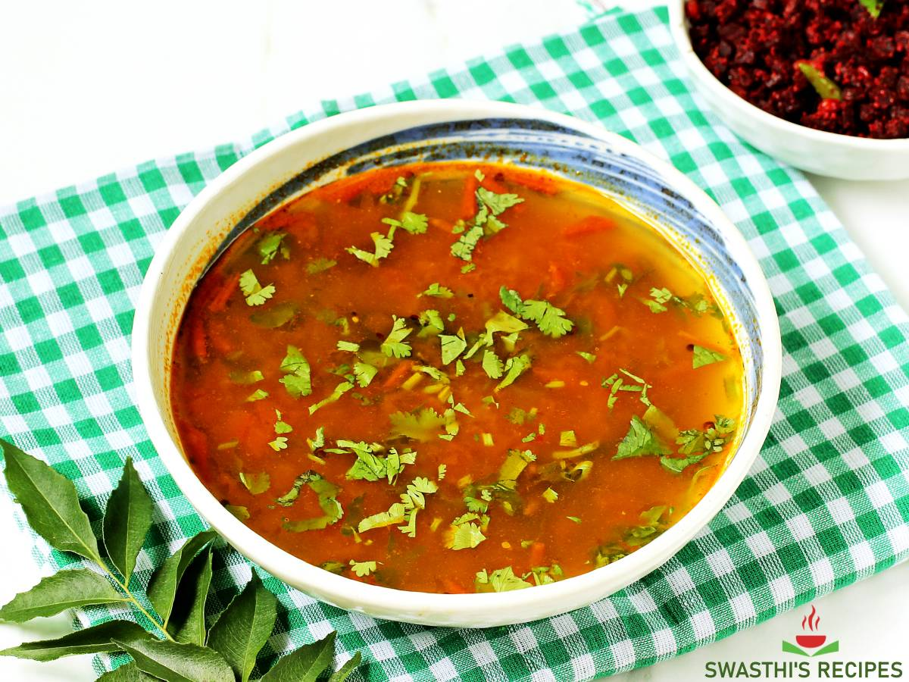

Rasam

Description
Rasam
Ingredients
The Rasam
- 1 tomato (chopped)
- 2 inch ginger (finely chopped)
- 3 chilli (finely chopped)
- few curry leaves
- 2 tbsp coriander (finely chopped)
- ½ tsp turmeric
- 1 tsp salt
- 5 cup water
- 1½ cup toor dal
- 2 tbsp coconut (grated)
- 2 tbsp coriander (finely chopped)
- 2 tbsp lemon juice
Tempering
Instructions
- In a large kadai
- Add the tomato, ginger, chilli, curry leaves and coriander.
- Add the turmeric, salt and water.
- Mix well, cover and boil for 15 minutes.
- After boiling, the tomato has softened and all the flavours are in the water.
- Add the toor dal and bring to a boil.
- Prepare the tempering
- Pour the tempering over the rasam.
- Add the coconut, coriander and lemon juice. mix well.
Nutrients
| Carbs |
Protein |
Fat |
Calories |
Fibre |
Sugar |
Sodium |
Calcium |
Sat |
GL |
| (g) |
(g) |
(g) |
(kCal) |
(g) |
(g) |
(mg) |
(mg) |
Fat (g) |
|
| 23.87 |
9.01 |
3.57 |
175.69 |
3.39 |
3.18 |
396.93 |
38.91 |
0.80 |
6.43 |
Back to top of page